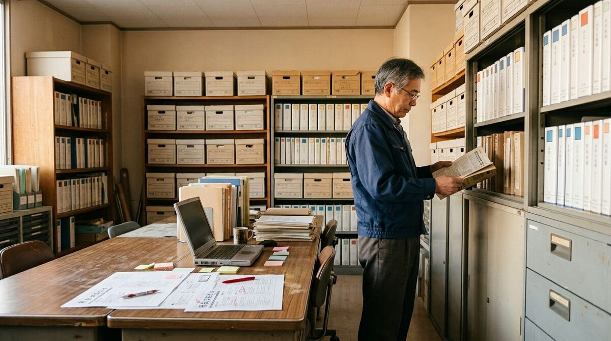

市民へ正確に情報を届けること。そして、その時代の出来事を未来へ残すこと。
秘書広報課は、広報紙やホームページなどを通じて、市政情報と市民をつなぐ窓口です。 一枚の記事や一枚の写真も、市の歩みを未来へ伝える大切な記録として整理・保存しています。
業務内容
広報ぬかピコ
毎月発行する「広報ぬかピコ」の企画・編集・発行を行っています。 行政情報だけでなく、市民生活や地域の出来事も記録として未来へ残しています。
市公式ホームページ
お知らせ、行政サービス、施設案内、イベント情報など、市政情報をわかりやすく発信しています。
デジタルアーカイブ
過去の広報ぬかピコや市政資料を整理・保存し、広報ぬかピコ・デジタルアーカイブで公開しています。
報道・広報
報道機関への情報提供、市公式写真の管理、市政記録の撮影・保存などを行っています。
FMピコぬ・ケーブルテレビ
FMピコぬの番組運営、ケーブルテレビ番組表の企画・案内を行っています。
記録を残すという仕事
一枚の写真、一つの記事、一冊の広報紙。そのどれもが、未来から振り返れば市の歴史になります。
秘書広報課では、今日の出来事を正確に伝えることと、未来へ残すことを同じくらい大切にしています。
基本情報
| 所在地 | ピコぬ市役所3階 |
|---|---|
| 電話番号 | ぬぬ-ぬかピコ-5555(ごーごーこうほー) |
| 受付時間 | 午前9時〜午後5時 |